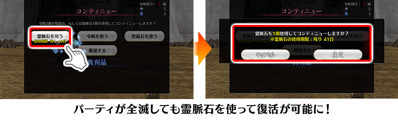

※12月1日(三) 17:00圖片更新
舉辦「主線關卡通過聲援宣傳活動 第1彈」！
【※12月1日(三) 17:00更新】
做為預定在2021年12月下旬開幕的主線關卡一環的期間限定活動「非靈長生存圏 通古斯卡聖域」的參加條件為通過第2部 第6章「Lostbelt No.6 妖精圓卓領域 阿瓦隆・勒菲 星辰誕生之刻」。請務必藉此機會推進主線關卡的攻略！
＞＞關於期間限定活動「非靈長生存圏 非靈長生存圏 通古斯卡聖域」的詳細 在此
※本頁面皆為開發中圖片。會有與實際圖片相異的情況。
◆宣傳活動舉辦期間◆
2021年10月28日(四) 17:00～12月2日(四) 12月31日(五) 22:59
※12月1日(三) 17:00修正
至今為止只能在主線關卡第1部使用的跟隨功能，變得可在主線關卡亞種特異點及第2部 第6章為止使用！
並且，跟隨的上限數擴張到5名！
活用擴充過的支援，目標通過主線關卡吧！
◆實施時間◆
2021年10月28日(四) 17:00～
在主線關卡第1部、亞種特異點、第2部的各節通過時的報酬，追加可使用在從者育成的「經驗值卡」！
※已經通過主線關卡份的報酬，會送到禮物箱內。 ※送到禮物箱的「經驗值卡」沒有領取期限。 ※本次禮物箱送到禮物箱的「追加份的通過報酬」不包含在禮物的最大持有數計算。 ※禮物箱內的禮物就算達到最大持有數(400件)的情況也可領取，超過最大持有數也不會刪除。
◆實施時間◆
2021年10月28日(四) 17:00～
在主線故事(從第1部 序章到第2部 第6章)的戰鬥敗北時，可消耗後回歸戰鬥的道具「靈脈石」做為「主線關卡通過聲援宣傳活動」的期間限定道具再登場！
「靈脈石」在下述期間中，初次登入時會做為登入獎勵領取1遍。
另外，敬請注意「靈脈石」的使用有使用期限，超過使用期限「靈脈石」會消失。
由於不用消耗令咒3劃或聖晶石就可回歸戰鬥，請在跟主線故事的強敵戰鬥活用！

※「靈脈石」只可在包含亞種特異點的主線故事中使用。 ※敬請注意無法在期間限定活動及主線分支使用。
◆登入獎勵對象◆
所有的御主對象
※新御主玩家，必須推進至通過「特異點F 炎上汙染都市 冬木 第3節 進行度1」。
◆登入獎勵實施期間◆
2021年10月28日(四) 17:00～12月2日(四) 11:59 12月30日(四) 22:59
※12月1日(三) 17:00修正
◆登入獎勵內容◆
| 道具名 | 個數 | |
|---|---|---|

|
靈脈石 | 3個 |
◆能使用的對象關卡◆
・主線關卡第1部(到終局特異點)
・亞種特異點(從Ⅰ到Ⅳ)
・主線關卡第2部(到第6章)
◆道具使用期限◆
2021年10月28日(四) 17:00～12月9日(四) 11:59 12月31日(五) 22:59
※12月1日(三) 17:00修正
【12月1日(三) 17:00更新】
隨著本登入獎勵的實施期間延長，關於靈脈石的使用期限也延長到2021年12月31日(五) 22:59。
另外，請注意做為預定在2021年12月下旬開幕的主線關卡一環的期間限定活動「非靈長生存圏 通古斯卡聖域」中無法使用「靈脈石」。
下述的期間中，在「御主任務」的「限定」標籤內以期間限定追加「【主線關卡通過聲援 第1彈】任務」。
通過至主線故事第2部 第5章 奧林帕斯的話，可得到魔力稜鏡500個、稀有稜鏡1個、傳承結晶1個！
◆舉辦期間◆
2021年10月28日(四) 17:00～12月2日(四) 11:59 12月31日(五) 22:59
※12月1日(三) 17:00修正
◆領取期間◆
2021年10月28日(四) 17:00～12月9日(四) 11:59 2022年1月7日(五) 22:59
※12月1日(三) 17:00修正
◆追加任務◆
| 任務名稱 | 任務達成報酬 | |
|---|---|---|
|
【主線關卡通過聲援 第1彈】 通過『終局特異點』 |

|
魔力稜鏡 100個 |
|
【主線關卡通過聲援 第1彈】 通過『Lostbelt No.1』 |
|
魔力稜鏡 100個 |
|
【主線關卡通過聲援 第1彈】 通過『Lostbelt No.2』 |
|
魔力稜鏡 100個 |
|
【主線關卡通過聲援 第1彈】 通過『Lostbelt No.3』 |
|
魔力稜鏡 100個 |
|
【主線關卡通過聲援 第1彈】 通過『Lostbelt No.4』 |
|
魔力稜鏡 100個 |
|
【主線關卡通過聲援 第1彈】 通過『Lostbelt No.5 亞特蘭提斯』 |

|
稀有稜鏡 1個 |
|
【主線關卡通過聲援 第1彈】 通過『Lostbelt No.5 奧林帕斯』 |

|
傳承結晶 1個 |
※請注意與每週日23:00更新的普通任務(Weekly)不同欄位，超過領取期間的話無法入手報酬。 ※就算已經通過至主線故事第2部 第5章 奧林帕斯的玩家，同様也能領取通過報酬。 ※就算達成「【主線關卡通過聲援 第1彈】任務」，也不會計算在普通任務(Weekly)的任務進行度。 ※根據主線故事的進行度會有無法達成「【主線關卡通過聲援 第1彈】任務」的情況。 ※請注意舉辦期間與領取期間有所差異。
下述的期間中，主線關卡第2部 第5.5章為止的消耗AP變成1/4！(就算在戰鬥中撤退的情況，也會是同様的消耗量)
尚未通過主線故事的御主，請務必活用此機會！
◆舉辦期間◆
2021年10月28日(四) 17:00～12月2日(四) 11:59 12月31日(五) 22:59
※12月1日(三) 17:00修正
◆對象關卡◆
・主線關卡第1部(從特異點F到終局特異點)
・主線關卡第2部(從第1章到第5.5章)
※現在主線故事第2部 第5章 亞特蘭提斯以前的AP消耗量是永久變成1/2的狀態。因此，宣傳活動結束後，該主線關卡的AP消耗量會變成1/2。 ※2021年10月31日(日) 22:59前，透過「幕間物語宣傳活動 第17彈」讓主線關卡第2部 第5.5章為止的消耗AP變成1/4，不會重複效果，消耗AP仍為1/4。 ※請注意亞種特異點(從Ⅰ到Ⅳ)、主線分支、自由關卡為對象外。
【12月1日(三) 17:00追記】
其他還有，
・主線關卡通過聲援宣傳活動 第2彈
・主線關卡通過聲援宣傳活動 第3彈
以期間限定舉辦中！
關於詳情，請自下述橫幅確認。
■「主線關卡通過聲援宣傳活動 第2彈」詳細情報

■「主線關卡通過聲援宣傳活動 第3彈」詳細情報